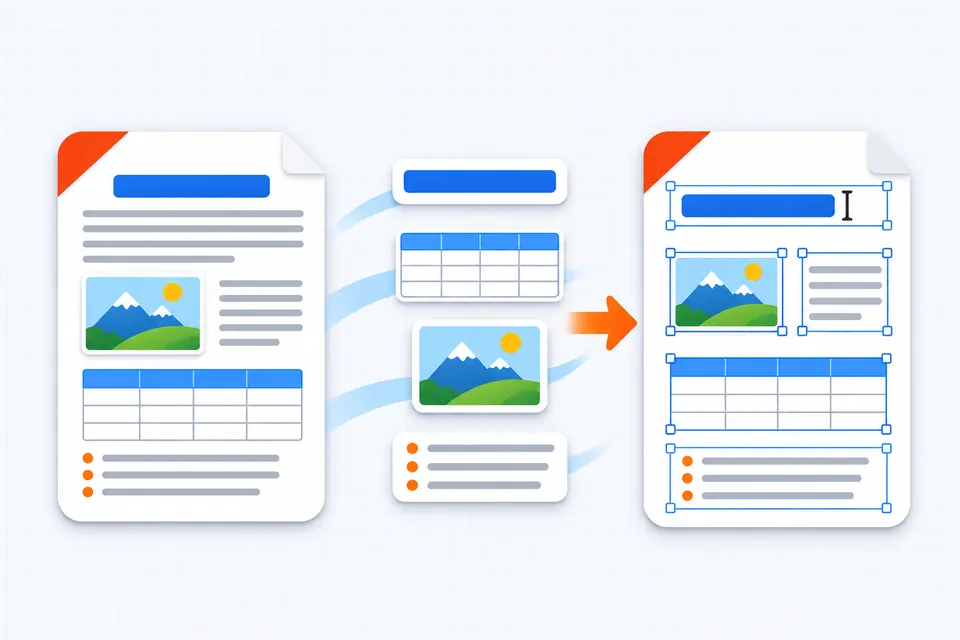
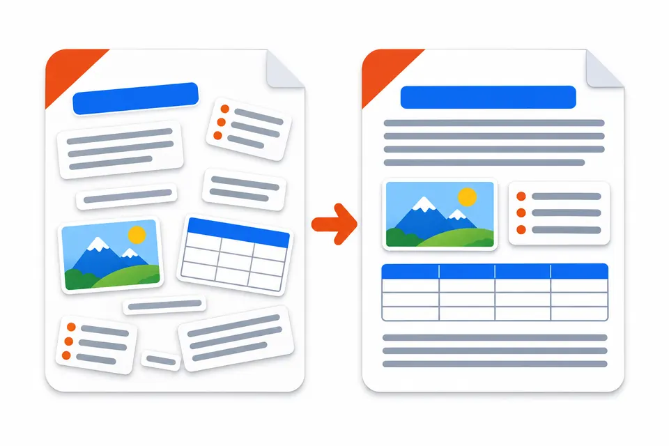
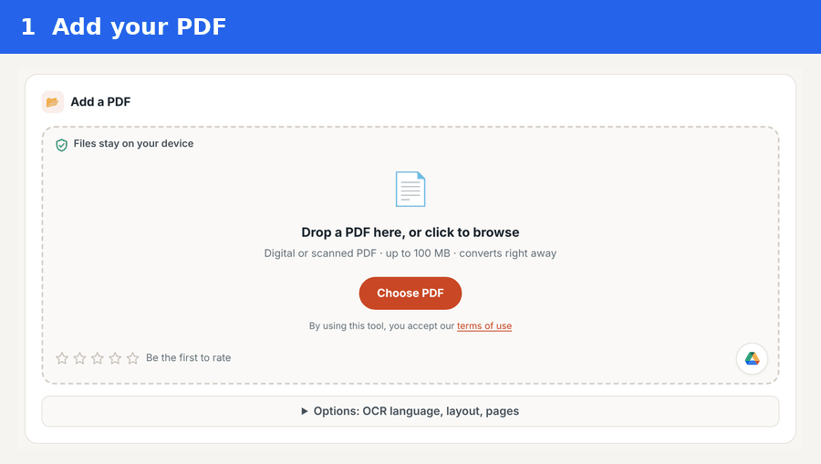
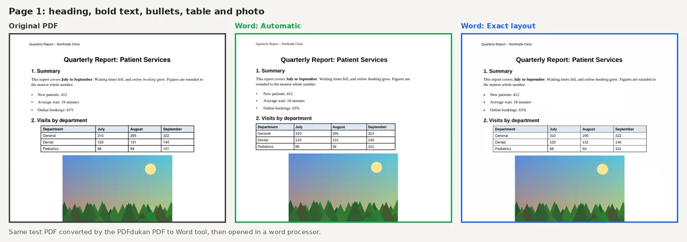
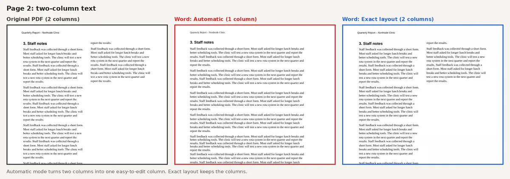
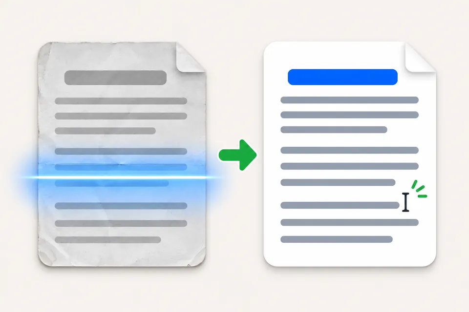
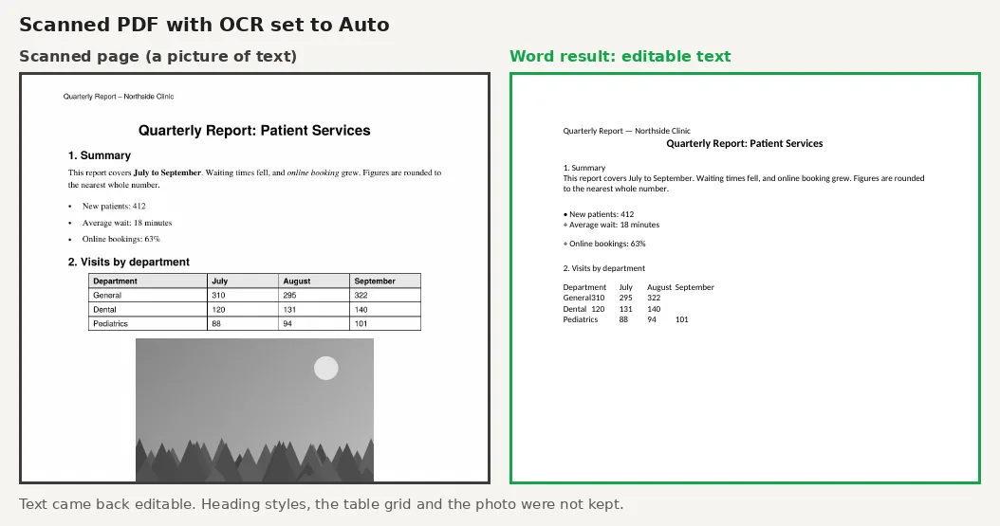

How to Convert PDF to Word Without Losing Formatting, Free

To convert a PDF file to Word without losing formatting for free, use a converter that rebuilds headings, tables and images as real Word parts. Pick a layout mode that matches your goal: an editable flow or the exact look. Then check columns, fonts and page breaks before you send the file.
The free PDF to Word converter on PDFdukan runs in your browser, with no sign-up and no watermark.
Why does formatting break when a PDF becomes Word?
Formatting breaks because a PDF stores letters at fixed positions on a page, not as paragraphs, tables or columns. A converter has to guess that structure and rebuild it. Every wrong guess shows up as a shifted line or a broken table.

Microsoft warns about the same problem when Word opens a PDF. In its words, the result "might not have a perfect page-to-page correspondence with the original." Word handles PDFs that are mostly text best.
How to convert PDF to Word without losing formatting
The PDFdukan converter needs four steps, and the file never leaves your device for conversion.
- Open the PDF to Word tool and add your PDF, up to 100 MB.
- Open Options and choose a Text layout mode.
- Leave "Scanned pages (OCR)" on Auto and pick the document language.
- Download the .docx and open it in Word, Google Docs or LibreOffice.

Which layout mode keeps formatting best?
Automatic mode keeps formatting best for editing, while Exact layout keeps the look best for reading. The table below shows what each mode kept in our test file.
| Part of the PDF | Automatic | Exact layout |
|---|---|---|
| Headings, bold and italic | Kept | Kept |
| Table | Real Word table | Looks right, not a Word table |
| Photo | Kept as an image | Kept in the page picture |
| Bullets | Real Word list | Text with bullet marks |
| Two columns | Merged into one column | Kept |
| Header and page number | Word header and footer | Kept in place |

Choose Automatic when you will rewrite text or update table numbers. Choose Exact layout for forms, brochures and designs you only need to correct lightly.

Can you convert a scanned PDF to Word?
Yes, a scanned PDF converts to editable Word text through OCR, but layout is the first thing to go. A scan is only a picture of a page, so there is no text to copy until OCR reads it.

In our scanned test page, the text came back editable at a 92% confidence score. Heading styles, the table grid and the photo were not kept. For scans, expect to restyle the document by hand.

Why do fonts change after conversion?
Fonts change when the PDF uses a font that is not installed on your computer. Word then swaps in a similar font, which can shift line and page breaks. Install the missing font, or select all text and apply one font you have.
How do you fix formatting after converting?
Fix the structure first and the small details last. Turn on Word's formatting marks to see stray line breaks. Then apply Heading styles, check that tables are real tables and set columns under Layout. Fix spacing only at the end.
Frequently Asked Questions
Can you convert a PDF file to Word without losing formatting for free?
Yes, for most text PDFs. A free converter that rebuilds tables, images, headers and lists keeps most formatting. Complex designs and scans still need a quick check.
Why does my Word file look different from the PDF?
A Word file looks different because the converter has to rebuild paragraphs, tables and columns from fixed positions. Missing fonts and different page breaks add to the change.
Can I edit a PDF without converting it to Word?
Yes. For a small fix, edit the PDF directly in the free PDF editor, which lets you retype a line and keeps the original layout.
Is there a file size limit?
The PDFdukan converter accepts PDFs up to 100 MB. Other tools set their own limits. Drawboard, for example, lists 40MB per file and 2 files every 30 seconds.
Is my PDF uploaded to a server?
No, the PDFdukan PDF to Word tool converts the file in your browser. The page still loads its own scripts, and OCR downloads language data the first time you use it.
How do I insert a PDF into a Word document instead?
Use Insert › Object in Word to place a PDF inside a document. That embeds the PDF as an object rather than turning it into editable text. To turn Word files back into PDFs, use Word to PDF.